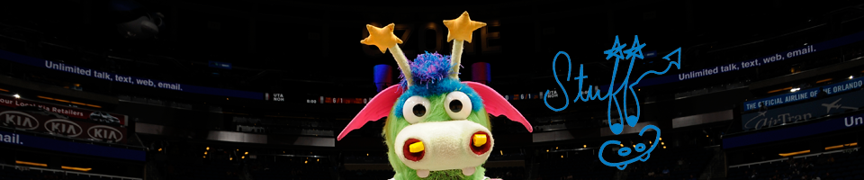

On October 27, 1998 a large egg was discovered in front of the Amway Arena. No one is sure what planet it came from or how it arrived in Orlando. Witnesses, however, report a giant explosion followed by a shower of deflated basketballs, Orlando Magic bumper stickers and puffs of green smoke. What emerged after that was a dragon with so much spirit, he just had to be the Magic’s Mascot. STUFF is one of the most recognizable mascots in professional sports. STUFF made his community debut at Church Street Station on Halloween night of 1988. He was an instant success and has since relished his role as the team “funny guy.” Full of energy and spark, he is guaranteed to bring a smile to the faces of fans both young and old.
" What emerged after that was a dragon with so much spirit, he just had to be the Magic’s Mascot."


Though his job is to represent the Magic, STUFF has gained his own fan-base along the way. His antics as a boisterous and persistent show-off are a hit with everyone. If you are lucky, you may even see the wild wackiness of STUFF’s inflatable alter ego, Air STUFF or perhaps you’ve has an opportunity to meet Mini STUFF! STUFF can be found at every home Magic game and most Magic-related activities, as well as civic and social events throughout Central Florida.
